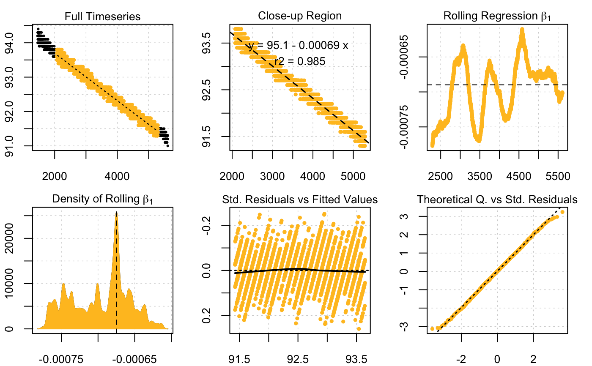

R/subset_data.R
subset_data.RdThis function subsets a data frame or inspect() object based on a given set
of rules. It can subset data based on ranges of: time, oxygen, row number, or
proportion of total oxygen used. For data frames, to subset by 'time', 'o2',
or 'proportion', the time data is assumed to be in the first column, and
oxygen in the second column. For inspect() objects, the data will have been
coerced to this structure already. The function can subset any data frame
by 'row'.
subset_data(x, from, to, by = "time")
| x | data frame or |
|---|---|
| from | numeric. Defines the lower bound(s) of the data to subset.
Subsetting is based on the argument: |
| to | numeric. Defines the upper bound(s) of the data to subset.
Subsetting is based on the argument: |
| by | string. "time", "row", "o2" or "proportion". |
A data.table or inspect object.
For multiple column data frames, such as with time in column 1, and multiple
columns of oxygen data, the subset object will include all columns. In the
case of subsetting by = "o2", subsetting is based on the first column of
oxygen data (i.e. column 2), and all subsequent columns are subset between
the same rows regardless of oxygen values.
This function is ideal for passing only some regions of your data to other
functions such as auto_rate, either by resaving them as a new object or
through the use of pipes (%>%). It is also ideal for use with
intermittent-flow data in loops, where each replicate can be extracted and
passed to an analytical function such as calc_rate or auto_rate. See
examples and vignettes.
#> #> # subset_data # ------------------------- #> Original data: #> Time o2 #> 1: 0 7.726446 #> 2: 1 7.726446 #> --- #> 34119: 34118 1.231048 #> 34120: 34119 1.231048 #> #> New data: #> Time o2 #> 1: 2000 7.102823 #> 2: 2001 7.102823 #> --- #> 2000: 3999 6.479200 #> 2001: 4000 6.479200plot(x)#> #> # subset_data # ------------------------- #> Original data: #> time o2.out o2.in o2.delta #> 1: 0 8.169730 8.879693 0.7099636 #> 2: 1 8.170744 8.884703 0.7139588 #> --- #> 934: 933 8.167505 8.887132 0.7196268 #> 935: 934 8.165069 8.864456 0.6993879 #> #> New data: #> time o2.out o2.in o2.delta #> 1: 50 8.175106 8.891686 0.7165791 #> 2: 51 8.185150 8.875577 0.6904272 #> --- #> 550: 599 8.176023 8.875059 0.6990357 #> 551: 600 8.166706 8.874728 0.7080218#> #> # subset_data # ------------------------- #> Original data: #> Time Oxygen #> 1: 0 95.6 #> 2: 1 95.6 #> --- #> 7512: 7511 90.2 #> 7513: 7512 90.3 #> #> New data: #> Time Oxygen #> 1: 1458 94.0 #> 2: 1459 94.2 #> --- #> 4153: 5610 91.3 #> 4154: 5611 91.0# Subset by proportion of total oxygen used: data("sardine.rd") subset_data(sardine.rd, from = 0.8, to = 0.4, by = "proportion")#> #> # subset_data # ------------------------- #> Original data: #> Time Oxygen #> 1: 0 95.6 #> 2: 1 95.6 #> --- #> 7512: 7511 90.2 #> 7513: 7512 90.3 #> #> New data: #> Time Oxygen #> 1: 993 94.5 #> 2: 994 94.7 #> --- #> 3072: 4064 92.2 #> 3073: 4065 92.1# Subset by row: data("flowthrough.rd") subset_data(flowthrough.rd, from = 10, to = 750, by = "row")#> #> # subset_data # ------------------------- #> Original data: #> time o2.out o2.in o2.delta #> 1: 0 8.169730 8.879693 0.7099636 #> 2: 1 8.170744 8.884703 0.7139588 #> --- #> 934: 933 8.167505 8.887132 0.7196268 #> 935: 934 8.165069 8.864456 0.6993879 #> #> New data: #> time o2.out o2.in o2.delta #> 1: 9 8.179554 8.876309 0.6967551 #> 2: 10 8.173299 8.890710 0.7174111 #> --- #> 740: 748 8.180551 8.861813 0.6812617 #> 741: 749 8.195288 8.892014 0.6967263# Pass (via piping) only part of a dataset to auto_rate data("sardine.rd") subset_data(sardine.rd, from = 94, to = 91, by = "o2") %>% auto_rate()#> #> # subset_data # ------------------------- #> Original data: #> Time Oxygen #> 1: 0 95.6 #> 2: 1 95.6 #> --- #> 7512: 7511 90.2 #> 7513: 7512 90.3 #> #> New data: #> Time Oxygen #> 1: 1458 94.0 #> 2: 1459 94.2 #> --- #> 4153: 5610 91.3 #> 4154: 5611 91.0#> #>#> #> # auto_rate # --------------------------- #> Data is subset by row using width of 747 #> Rates were computed using 'linear' method #> 14 linear regions detected in the kernel density estimate #> #> Rank 1 of 14 : #> Rate: -0.0006902512 #> R.sq: 0.985 #> Rows: 581 to 3880 #> Time: 2038 to 5337